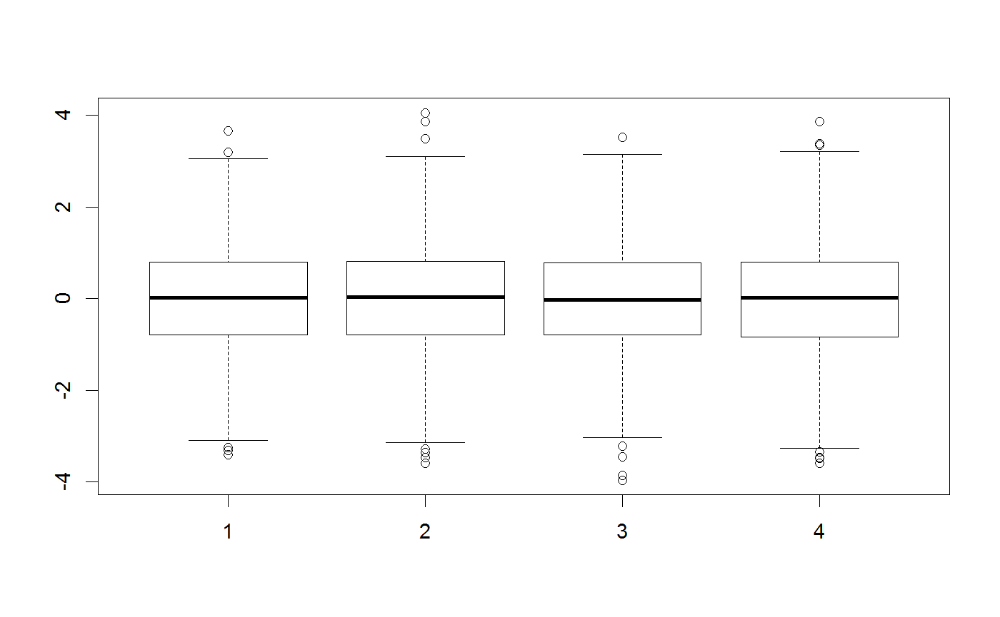
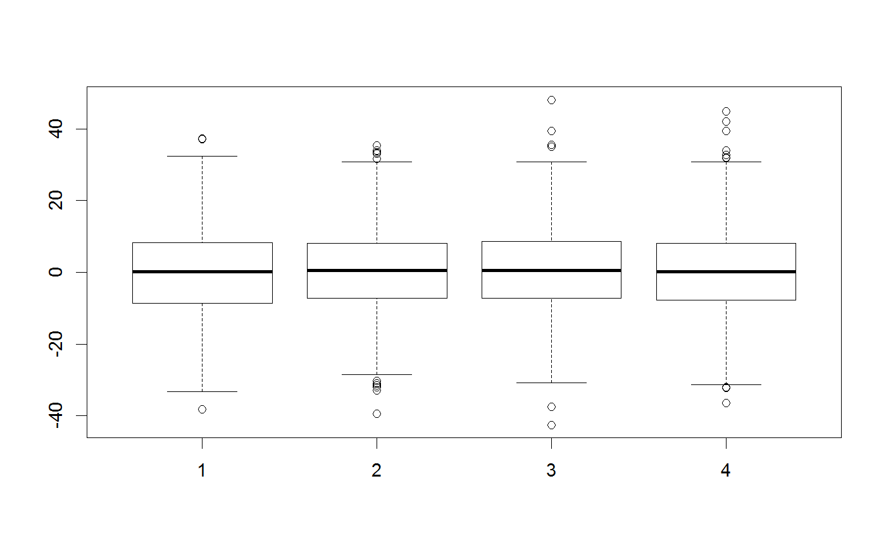
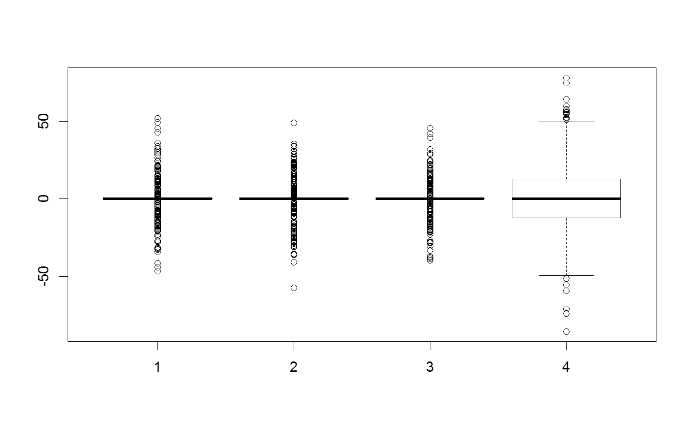
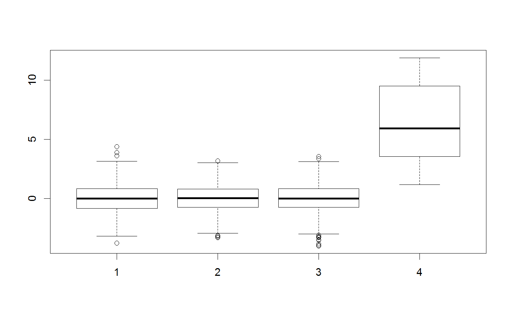

Factory that creates a proposal generator
Factory that creates a proposal generator
createProposalGenerator(covariance, gibbsProbabilities = NULL, gibbsWeights = NULL, otherDistribution = NULL, otherDistributionLocation = NULL, otherDistributionScaled = F, message = F, method = "chol", scalingFactor = 2.38)
Arguments
| covariance | covariance matrix. Can also be vector of the sqrt of diagonal elements --> standard deviation |
|---|---|
| gibbsProbabilities | optional probabilities for the number of parameters to vary in a Metropolis within gibbs style - for 4 parameters, c(1,1,0.5,0) means that at most 3 parameters will be varied, and it is double as likely to vary one or two than varying 3 |
| gibbsWeights | optional probabilities for parameters to be varied in a Metropolis within gibbs style - default ist equal weight for all parameters - for 4 parameters, c(1,1,1,100) would mean that if 2 parameters would be selected, parameter 4 would be 100 times more likely to be picked than the others. If 4 is selected, the remaining parameters have equal probability. |
| otherDistribution | optional additinal distribution to be mixed with the default multivariate normal. The distribution needs to accept a parameter vector (to allow for the option of making the distribution dependend on the parameter values), but it is still assumed that the change from the current values is returned, not the new absolute values. |
| otherDistributionLocation | a vector with 0 and 1, denoting which parameters are modified by the otherDistribution |
| otherDistributionScaled | should the other distribution be scaled if gibbs updates are calculated? |
| message | print out parameter settings |
| method | method for covariance decomposition |
| scalingFactor | scaling factor for the proposals |
See also
Examples
testMatrix = matrix(rep(c(0,0,0,0), 1000), ncol = 4) testVector = c(0,0,0,0) ##Standard multivariate normal proposal generator testGenerator <- createProposalGenerator(covariance = c(1,1,1,1), message = TRUE)#> Proposalgenerator createdcovariance set to: #> [,1] [,2] [,3] [,4] #> [1,] 1 0 0 0 #> [2,] 0 1 0 0 #> [3,] 0 0 1 0 #> [4,] 0 0 0 1 #> covarianceDecomp set to: #> [,1] [,2] [,3] [,4] #> [1,] 1 0 0 0 #> [2,] 0 1 0 0 #> [3,] 0 0 1 0 #> [4,] 0 0 0 1 #> gibbsProbabilities set to: #> NULL #> gibbsWeights set to: #> NULL #> otherDistribution set to: #> NULL #> otherDistributionLocation set to: #> NULLmethods(class = "proposalGenerator")#> [1] print #> see '?methods' for accessing help and source codeprint(testGenerator)#> covariance set to: #> [,1] [,2] [,3] [,4] #> [1,] 1 0 0 0 #> [2,] 0 1 0 0 #> [3,] 0 0 1 0 #> [4,] 0 0 0 1 #> covarianceDecomp set to: #> [,1] [,2] [,3] [,4] #> [1,] 1 0 0 0 #> [2,] 0 1 0 0 #> [3,] 0 0 1 0 #> [4,] 0 0 0 1 #> gibbsProbabilities set to: #> NULL #> gibbsWeights set to: #> NULL #> otherDistribution set to: #> NULL #> otherDistributionLocation set to: #> NULLx = testGenerator$returnProposal(testVector) x#> [1] -0.08528815 0.96024687 -0.21403684 0.86855229x <- testGenerator$returnProposalMatrix(testMatrix) boxplot(x)##Changing the covariance testGenerator$covariance = diag(rep(100,4)) testGenerator <- testGenerator$updateProposalGenerator(testGenerator, message = TRUE)#> Proposalgenerator settings changedcovariance set to: #> [,1] [,2] [,3] [,4] #> [1,] 100 0 0 0 #> [2,] 0 100 0 0 #> [3,] 0 0 100 0 #> [4,] 0 0 0 100 #> covarianceDecomp set to: #> [,1] [,2] [,3] [,4] #> [1,] 10 0 0 0 #> [2,] 0 10 0 0 #> [3,] 0 0 10 0 #> [4,] 0 0 0 10 #> gibbsProbabilities set to: #> NULL #> gibbsWeights set to: #> NULL #> otherDistribution set to: #> NULL #> otherDistributionLocation set to: #> NULLtestGenerator$returnProposal(testVector)#> [1] -6.237000 2.271769 0.885039 -3.262444x <- testGenerator$returnProposalMatrix(testMatrix) boxplot(x)##-Changing the gibbs probabilities / probability to modify 1-n parameters testGenerator$gibbsProbabilities = c(1,1,0,0) testGenerator <- testGenerator$updateProposalGenerator(testGenerator) testGenerator$returnProposal(testVector)#> [1] -27.17082 0.00000 -26.53460 0.00000x <- testGenerator$returnProposalMatrix(testMatrix) boxplot(x)##-Changing the gibbs weights / probability to pick each parameter testGenerator$gibbsWeights = c(0.3,0.3,0.3,100) testGenerator <- testGenerator$updateProposalGenerator(testGenerator) testGenerator$returnProposal(testVector)#> [1] 11.78213 0.00000 0.00000 17.64915x <- testGenerator$returnProposalMatrix(testMatrix) boxplot(x)##-Adding another function otherFunction <- function(x) sample.int(10,1) testGenerator <- createProposalGenerator( covariance = c(1,1,1), otherDistribution = otherFunction, otherDistributionLocation = c(0,0,0,1), otherDistributionScaled = TRUE ) testGenerator$returnProposal(testVector)#> [1] 0.7176416 1.8980108 -2.8475711 3.5700000x <- testGenerator$returnProposalMatrix(testMatrix) boxplot(x)table(x[,4])#> #> 1.19 2.38 3.57 4.76 5.95 7.14 8.33 9.52 10.71 11.9 #> 129 92 113 97 96 87 89 99 98 100